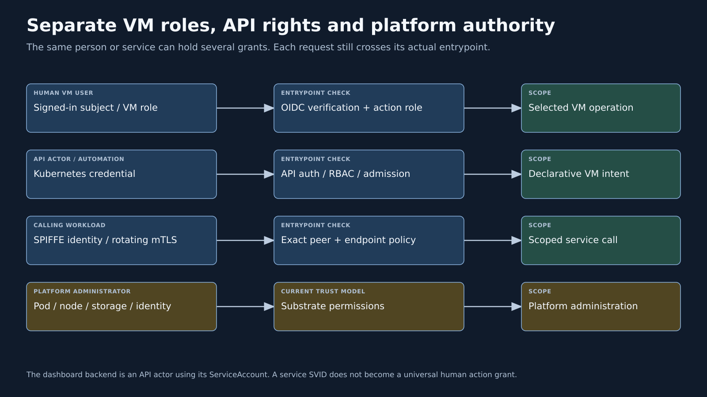
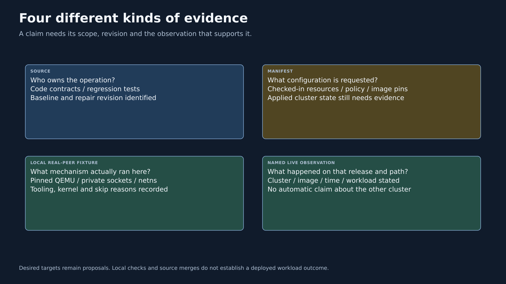
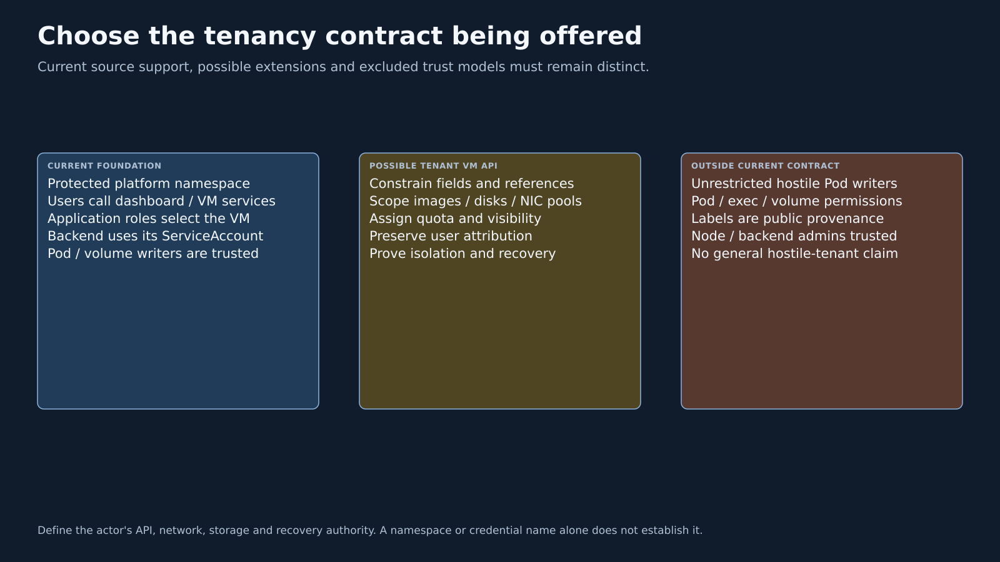

Identity and authority review
One login is not universal authority
Identity review / Keystone replacement
Evidence: S18, S19, S20, S23, S141 / 12 · identity

Five identity questions with different answers
Identity and authority review
Keystone leaves; these owners remain
| Question | Target owner |
|---|---|
| May this API request change a VM? | Kubernetes authentication, RBAC and admission |
| May this human manage this VM? | Verified OIDC identity and the application VM role |
| Is this the allowed calling service? | Exact workload SPIFFE identity and rotating mTLS |
Evidence: U05, S16, S18, S19, S203 / 12 · identity

Separate VM, API, workload and platform authority

Service admission and user authorization are both required
Identity and authority review
A management action crosses explicit gates
- Dashboard checks the selected VM and keeps the human bearer server-side.
- The VM service admits the exact workload peer and verifies the human action role.
- Manager receives a bounded local operation and retains its private QMP authority.
Evidence: S06, S16, S17, S18, S196 / 12 · identity
Identity and authority review
Console access has its own path and role
- Graphical console admission is admin-scoped.
- Private VNC is reached through authenticated, selected-VM proxy hops.
- Guest packet identities remain in separate NIC anchors.
Evidence: S06, S08, S17, S187 / 12 · identity
Identity and authority review
Guest identity is optional and VM-bound
- Software-TPM credentials bind the intended VM identity lifecycle.
- The relay carries opaque agent/server TLS bytes rather than issuing identities.
- Software vTPM does not provide confidential-computing isolation from the node.
Evidence: S20, S23, S248 / 12 · identity
Identity and authority review
Cleanup follows lifecycle provenance
| Object | Correct reference |
|---|---|
| State claim | Exact launch/VM/claim provenance or established owner |
| Access groups | Recorded created UUIDs and exact generated names |
| Current user grants | Authorize actions; do not redefine old cleanup ownership |
Evidence: A01, A02, S169 / 12 · identity

Four different kinds of evidence

Current and possible tenancy models
Identity and authority review
Review the remaining trust contract
- Assign trusted namespace/API writers and required tenant isolation.
- Prove issuer/audience/role scope, exact service peers and credential rotation.
- Keep human login, guest workload identity and disk fencing as distinct decisions.
Evidence: S14, S16, S18, S19, S20, S2312 / 12 · identity